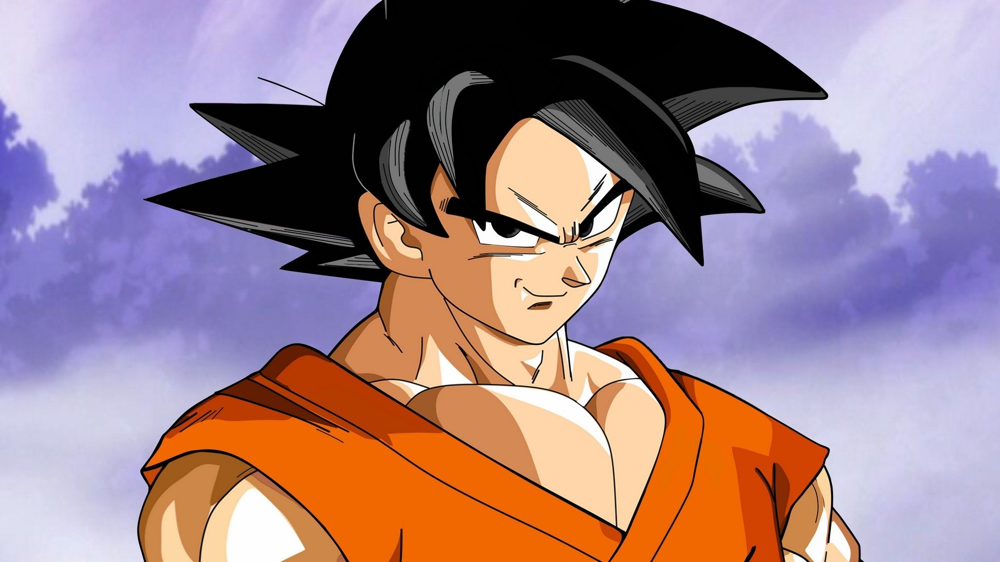

Goku
Goku is the main protagonist of the Dragon Ball series. He was born as a Saiyan named Kakarot on Planet Vegeta and sent to Earth as a baby. After being raised on Earth, he grew into a kind-hearted martial artist who relentlessly searches for stronger opponents and new challenges.
Backstory
Goku was adopted and raised by Grandpa Gohan on Earth and learned martial arts from a young age. He trained under several masters, including Master Roshi, and became one of the strongest fighters in the universe. His adventures often involve defending Earth from powerful enemies.
Abilities
- Kamehameha
- Instant Transmission
- Flight
- Ki blasts
- Solar Flare
- Super Saiyan transformations
- Advanced martial arts
Personality
Goku is cheerful, competitive, loyal, and always eager to improve. He loves fighting strong opponents but usually fights for the challenge rather than out of anger.
Species
Saiyan
Affiliation
Z Fighters
First Appearance
Dragon Ball manga, later becoming the main character of the Dragon Ball anime franchise.
Back to Gallery